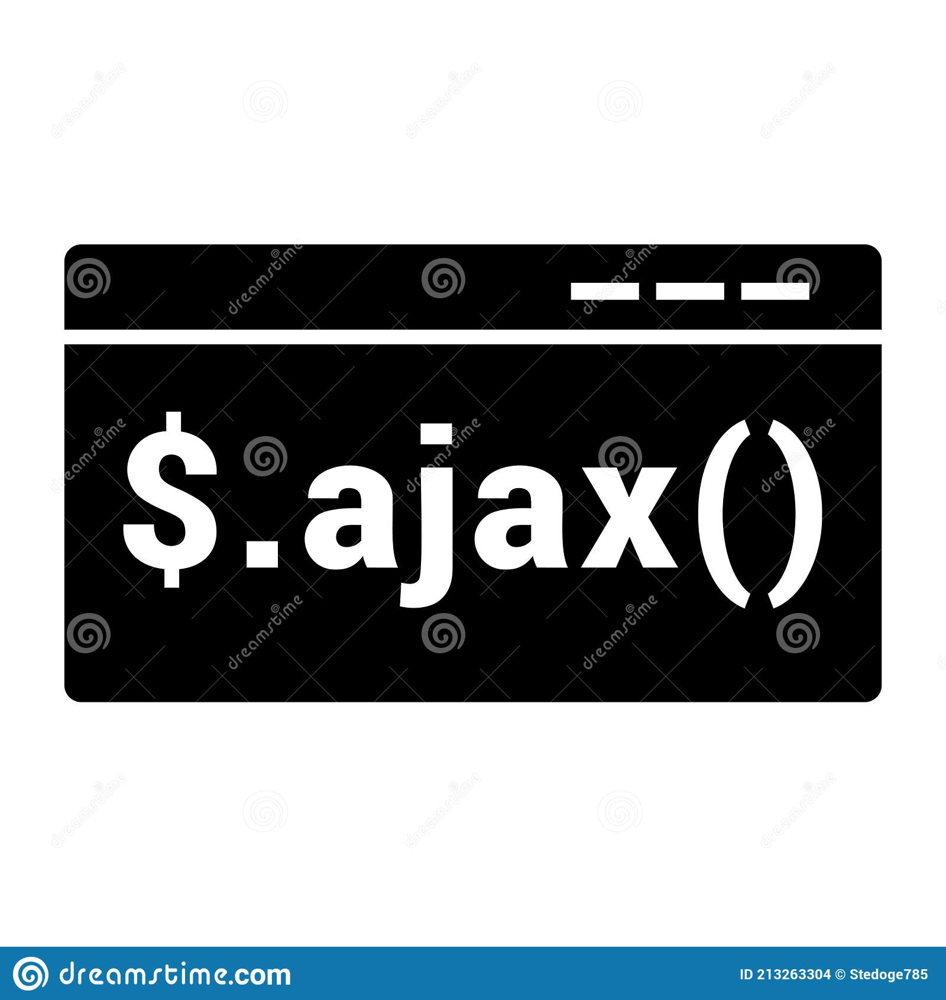

Python é uma linguagem de programação de alto nível e de propósito geral. Sua filosofia de design enfatiza a legibilidade do código com o uso de recuo significativo. Suas construções de linguagem e abordagem orientada a objetos visam ajudar os programadores a escrever código claro e lógico para projetos de pequena e grande escala.
Java é uma programação de alto nível, baseada em classes e orientada a objetos. Linguagem que é projetada para ter o mínimo de dependências de implementação que possível.

C# é uma programação multiparadigma de propósito geral. Língua C# engloba tipagem estática, tipagem forte, lexicalmente com escopo, imperativo, declarativo, funcional, genérico, disciplinas de programação orientadas a objetos e orientadas a componentes.

R é uma linguagem de programação para estatísticas, computação e gráficos suportados pelo R Core Team e pelo R Fundação para Computação Estatística. Criado pelos estatísticos Ross Ihaka e Robert Gentleman, R é usado entre mineradores de dados e estatísticos para análise de dados e desenvolvimento de software estatístico.